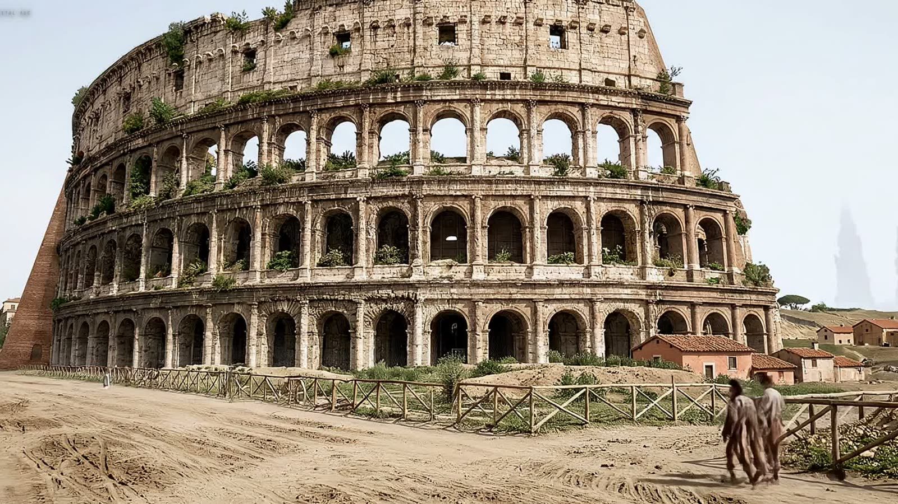
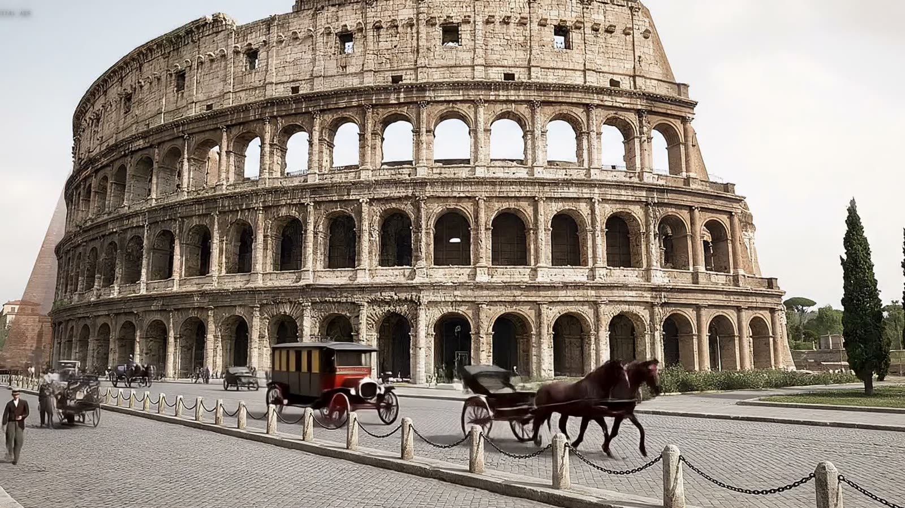
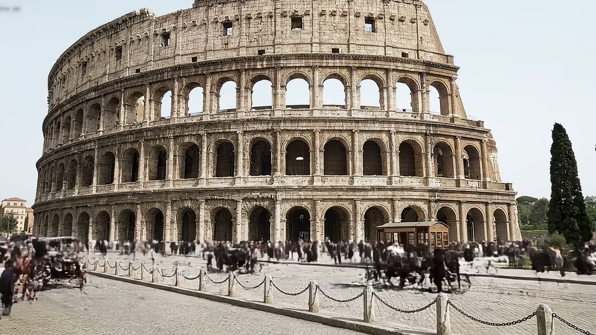
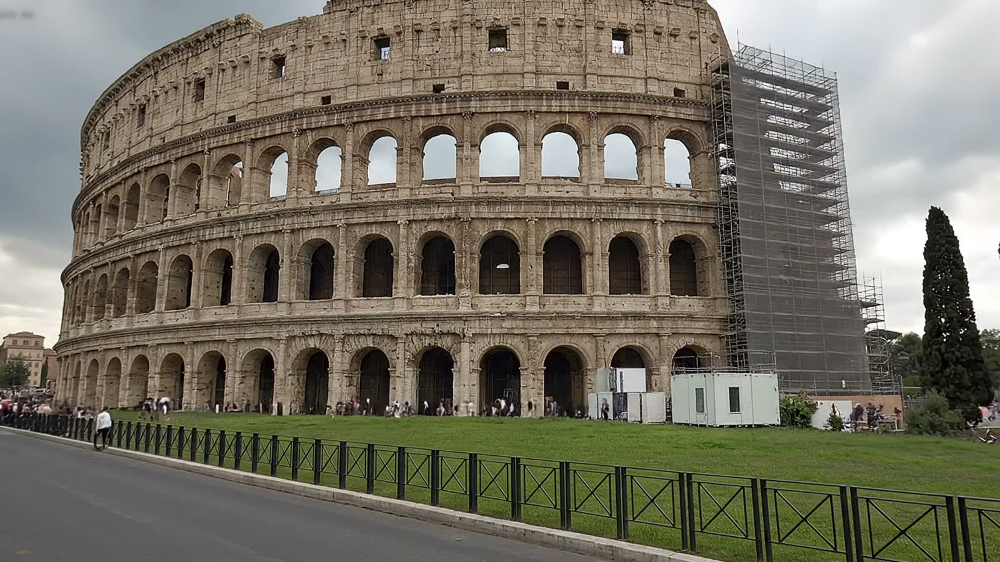
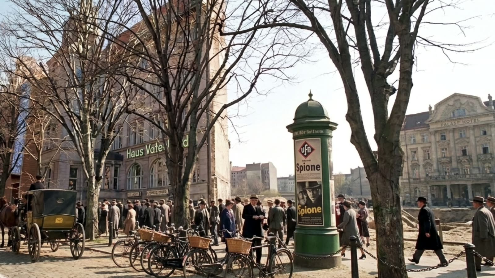
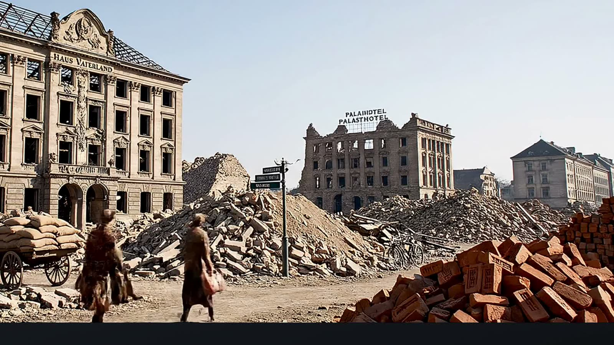
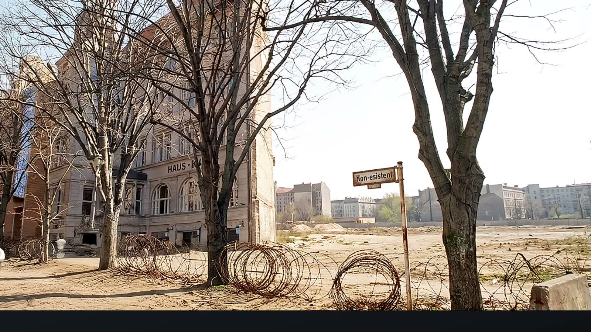
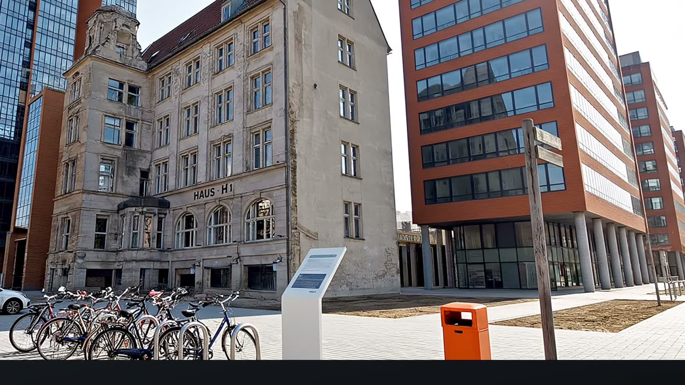
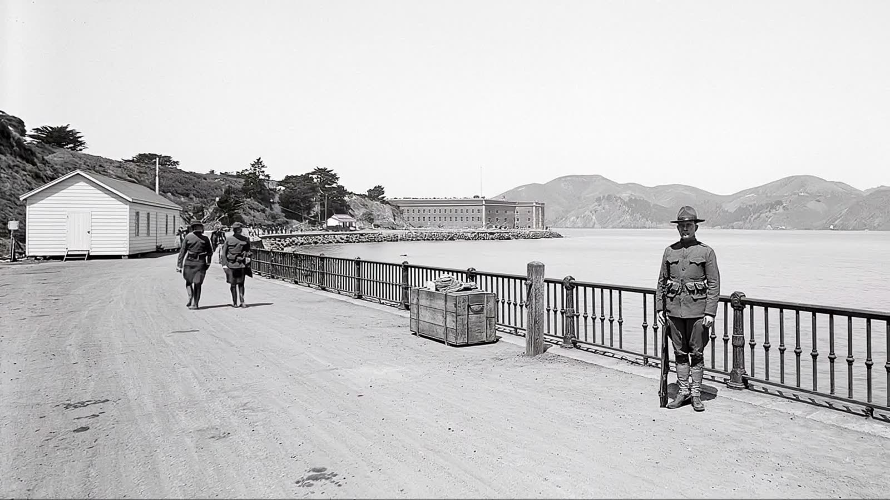
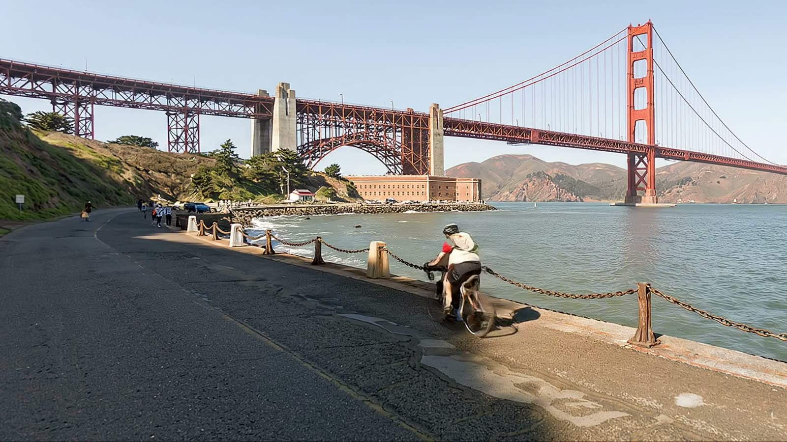

Every picture below is the same place as the one beside it, from the same position, in a different year. Nothing moved but the date.
This is not a record of the past. Nothing here was looked up. Each frame is a machine's best guess at a place it never saw, built out of whatever happened to survive and out of how the past has been pictured ever since. Treat it as how we imagine 1810 looked, not as how 1810 looked.
Four frames, one camera. The cypress on the right survives three of them, which is the easiest way to check that the viewpoint held.




The widest swing of anything here — the busiest square in Europe, then rubble, then the ground the Wall ran through, then glass. Honestly: the camera does not hold across these four. The vantage moves between them. It is the best illustration on this page of both what the thing can do and where it breaks.




The strait, the shoreline and the headlands are the same in both. The bridge is the only thing that arrives.


Drop a pin anywhere on Earth, dial a year between the Great Dying and 3050, and pull the lever. One page, no backend, no account — it runs in your browser and talks to the model provider directly.
github.com/TengHu/GL4SSYou bring your own API key · nothing is generated until you pull the lever